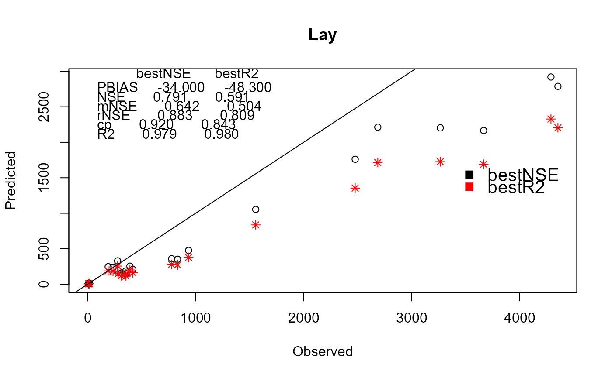

R/rgreen_plots.R
compare_calib.RdReturns a scatter plot comparing observed versus modeled loads obtained with two model parameter sets
compare_calib(
catch_data,
annual_data,
alpha_p1,
alpha_l1,
sd_coef1,
alpha_p2,
alpha_l2,
sd_coef2,
years,
name_basin,
setPlabels
)data frame. Definition of the topological sequence of catchments.
data frame. Sources of nutrient for each year and catchments.
numeric. The basin retention coefficient of the first set of parameters.
numeric. The river retention coefficient of the first set of parameters.
numeric. Fraction of domestic diffuse sources that reaches the stream network of the first set of parameters.
numeric. The basin retention coefficient of the second set of parameters.
numeric. The river retention coefficient of the second set of parameters.
numeric. Fraction of domestic diffuse sources that reaches the stream network of the second set of parameters.
numeric. Years to be shown in the plot.
character. Name of the basin (title of the plot).
character. Labels identifying each set of parameter.
A scatter plot
# the data of the TN scenario
data(catch_data_TN)
data(annual_data_TN)
# the first set of parameters to assess the basin model
alpha_p <- 35.09
alpha_l <- 0.02
sd_coef <- 0.2
# the second set of parameters to assess the basin model
alpha_p2 <- 41.23
alpha_l2 <- 0.0015
sd_coef2 <- 0.6
# years in which the plot will we shown
years <- 1990:2018
nameBasin <- "Lay"
# generating the scatter plot comparing two set of parameters observed
# versus modeled loads by year
setPlabels <- c("bestNSE","bestR2")
compare_calib(catch_data_TN, annual_data_TN, alpha_p , alpha_l, sd_coef,
alpha_p2, alpha_l2, sd_coef2, years, nameBasin, setPlabels)
#> [1] "Calculating year: 1990"
#> [1] "Calculating year: 1991"
#> [1] "Calculating year: 1992"
#> [1] "Calculating year: 1993"
#> [1] "Calculating year: 1994"
#> [1] "Calculating year: 1995"
#> [1] "Calculating year: 1996"
#> [1] "Calculating year: 1997"
#> [1] "Calculating year: 1998"
#> [1] "Calculating year: 1999"
#> [1] "Calculating year: 2000"
#> [1] "Calculating year: 2001"
#> [1] "Calculating year: 2002"
#> [1] "Calculating year: 2003"
#> [1] "Calculating year: 2004"
#> [1] "Calculating year: 2005"
#> [1] "Calculating year: 2006"
#> [1] "Calculating year: 2007"
#> [1] "Calculating year: 2008"
#> [1] "Calculating year: 2009"
#> [1] "Calculating year: 2010"
#> [1] "Calculating year: 2011"
#> [1] "Calculating year: 2012"
#> [1] "Calculating year: 2013"
#> [1] "Calculating year: 2014"
#> [1] "Calculating year: 2015"
#> [1] "Calculating year: 2016"
#> [1] "Calculating year: 2017"
#> [1] "Calculating year: 2018"
#> [1] "Calculating year: 1990"
#> [1] "Calculating year: 1991"
#> [1] "Calculating year: 1992"
#> [1] "Calculating year: 1993"
#> [1] "Calculating year: 1994"
#> [1] "Calculating year: 1995"
#> [1] "Calculating year: 1996"
#> [1] "Calculating year: 1997"
#> [1] "Calculating year: 1998"
#> [1] "Calculating year: 1999"
#> [1] "Calculating year: 2000"
#> [1] "Calculating year: 2001"
#> [1] "Calculating year: 2002"
#> [1] "Calculating year: 2003"
#> [1] "Calculating year: 2004"
#> [1] "Calculating year: 2005"
#> [1] "Calculating year: 2006"
#> [1] "Calculating year: 2007"
#> [1] "Calculating year: 2008"
#> [1] "Calculating year: 2009"
#> [1] "Calculating year: 2010"
#> [1] "Calculating year: 2011"
#> [1] "Calculating year: 2012"
#> [1] "Calculating year: 2013"
#> [1] "Calculating year: 2014"
#> [1] "Calculating year: 2015"
#> [1] "Calculating year: 2016"
#> [1] "Calculating year: 2017"
#> [1] "Calculating year: 2018"

#> [[1]]
#> HydroID To_catch Shreve LakeFrRet NrmLengthKm BB Year ObsLoad
#> 1: 368447 -1 95 0 0.064614 0.9987086 1990 NA
#> 2: 368447 -1 95 0 0.064614 0.9987086 1991 NA
#> 3: 368447 -1 95 0 0.064614 0.9987086 1992 NA
#> 4: 368447 -1 95 0 0.064614 0.9987086 1993 NA
#> 5: 368447 -1 95 0 0.064614 0.9987086 1994 NA
#> 6: 368447 -1 95 0 0.064614 0.9987086 1995 NA
#> 7: 368447 -1 95 0 0.064614 0.9987086 1996 NA
#> 8: 368447 -1 95 0 0.064614 0.9987086 1997 NA
#> 9: 368447 -1 95 0 0.064614 0.9987086 1998 NA
#> 10: 368447 -1 95 0 0.064614 0.9987086 1999 NA
#> 11: 368447 -1 95 0 0.064614 0.9987086 2000 NA
#> 12: 368447 -1 95 0 0.064614 0.9987086 2001 NA
#> 13: 368447 -1 95 0 0.064614 0.9987086 2002 NA
#> 14: 368447 -1 95 0 0.064614 0.9987086 2003 NA
#> 15: 368447 -1 95 0 0.064614 0.9987086 2004 NA
#> 16: 368447 -1 95 0 0.064614 0.9987086 2005 NA
#> 17: 368447 -1 95 0 0.064614 0.9987086 2006 NA
#> 18: 368447 -1 95 0 0.064614 0.9987086 2007 NA
#> 19: 368447 -1 95 0 0.064614 0.9987086 2008 NA
#> 20: 368447 -1 95 0 0.064614 0.9987086 2009 NA
#> 21: 368447 -1 95 0 0.064614 0.9987086 2010 NA
#> 22: 368447 -1 95 0 0.064614 0.9987086 2011 NA
#> 23: 368447 -1 95 0 0.064614 0.9987086 2012 NA
#> 24: 368447 -1 95 0 0.064614 0.9987086 2013 NA
#> 25: 368447 -1 95 0 0.064614 0.9987086 2014 NA
#> 26: 368447 -1 95 0 0.064614 0.9987086 2015 NA
#> 27: 368447 -1 95 0 0.064614 0.9987086 2016 NA
#> 28: 368447 -1 95 0 0.064614 0.9987086 2017 NA
#> 29: 368447 -1 95 0 0.064614 0.9987086 2018 NA
#> HydroID To_catch Shreve LakeFrRet NrmLengthKm BB Year ObsLoad
#> CatchToRiver CatchLoad
#> 1: 33.13114 1701.421
#> 2: 45.54241 2070.467
#> 3: 46.52118 2239.774
#> 4: 43.14434 2278.514
#> 5: 79.71795 3910.796
#> 6: 39.08402 2464.784
#> 7: 34.13716 1925.848
#> 8: 36.70673 1973.427
#> 9: 63.64245 2941.943
#> 10: 88.07411 4373.750
#> 11: 92.42113 4621.346
#> 12: 73.95507 3856.415
#> 13: 60.27005 3412.434
#> 14: 39.98493 2417.657
#> 15: 33.19720 1929.296
#> 16: 21.49135 1161.280
#> 17: 58.60271 3075.569
#> 18: 41.85122 2377.628
#> 19: 56.87685 3206.906
#> 20: 39.61076 2410.989
#> 21: 39.89819 1943.695
#> 22: 27.16230 1823.550
#> 23: 48.01996 2590.699
#> 24: 52.93532 2676.479
#> 25: 62.69433 3598.337
#> 26: 32.41916 2084.286
#> 27: 31.52778 2167.381
#> 28: 21.12808 1393.209
#> 29: 53.70585 3069.471
#> CatchToRiver CatchLoad
#>
#> [[2]]
#> HydroID To_catch Shreve LakeFrRet NrmLengthKm BB Year ObsLoad
#> 1: 368447 -1 95 0 0.064614 0.9999031 1990 NA
#> 2: 368447 -1 95 0 0.064614 0.9999031 1991 NA
#> 3: 368447 -1 95 0 0.064614 0.9999031 1992 NA
#> 4: 368447 -1 95 0 0.064614 0.9999031 1993 NA
#> 5: 368447 -1 95 0 0.064614 0.9999031 1994 NA
#> 6: 368447 -1 95 0 0.064614 0.9999031 1995 NA
#> 7: 368447 -1 95 0 0.064614 0.9999031 1996 NA
#> 8: 368447 -1 95 0 0.064614 0.9999031 1997 NA
#> 9: 368447 -1 95 0 0.064614 0.9999031 1998 NA
#> 10: 368447 -1 95 0 0.064614 0.9999031 1999 NA
#> 11: 368447 -1 95 0 0.064614 0.9999031 2000 NA
#> 12: 368447 -1 95 0 0.064614 0.9999031 2001 NA
#> 13: 368447 -1 95 0 0.064614 0.9999031 2002 NA
#> 14: 368447 -1 95 0 0.064614 0.9999031 2003 NA
#> 15: 368447 -1 95 0 0.064614 0.9999031 2004 NA
#> 16: 368447 -1 95 0 0.064614 0.9999031 2005 NA
#> 17: 368447 -1 95 0 0.064614 0.9999031 2006 NA
#> 18: 368447 -1 95 0 0.064614 0.9999031 2007 NA
#> 19: 368447 -1 95 0 0.064614 0.9999031 2008 NA
#> 20: 368447 -1 95 0 0.064614 0.9999031 2009 NA
#> 21: 368447 -1 95 0 0.064614 0.9999031 2010 NA
#> 22: 368447 -1 95 0 0.064614 0.9999031 2011 NA
#> 23: 368447 -1 95 0 0.064614 0.9999031 2012 NA
#> 24: 368447 -1 95 0 0.064614 0.9999031 2013 NA
#> 25: 368447 -1 95 0 0.064614 0.9999031 2014 NA
#> 26: 368447 -1 95 0 0.064614 0.9999031 2015 NA
#> 27: 368447 -1 95 0 0.064614 0.9999031 2016 NA
#> 28: 368447 -1 95 0 0.064614 0.9999031 2017 NA
#> 29: 368447 -1 95 0 0.064614 0.9999031 2018 NA
#> HydroID To_catch Shreve LakeFrRet NrmLengthKm BB Year ObsLoad
#> CatchToRiver CatchLoad
#> 1: 23.14125 1293.6883
#> 2: 32.64331 1576.3129
#> 3: 33.46017 1712.2320
#> 4: 31.17077 1758.4885
#> 5: 61.76098 3149.5454
#> 6: 27.83425 1901.5348
#> 7: 23.79050 1468.3185
#> 8: 25.59968 1508.4185
#> 9: 46.76645 2287.8286
#> 10: 67.74168 3547.2319
#> 11: 71.02417 3756.1303
#> 12: 55.20274 3084.4853
#> 13: 43.80820 2700.5121
#> 14: 27.67398 1868.9368
#> 15: 22.50316 1481.2119
#> 16: 14.20004 917.4339
#> 17: 42.67006 2428.6389
#> 18: 29.36715 1852.3738
#> 19: 41.49992 2552.5429
#> 20: 27.79424 1885.8581
#> 21: 27.92406 1507.2943
#> 22: 18.32771 1404.9894
#> 23: 34.04862 2006.0422
#> 24: 37.92479 2068.1885
#> 25: 46.11051 2863.6398
#> 26: 21.39909 1552.7467
#> 27: 20.59787 1609.6376
#> 28: 13.03652 1009.4803
#> 29: 37.72782 2342.0229
#> CatchToRiver CatchLoad
#>